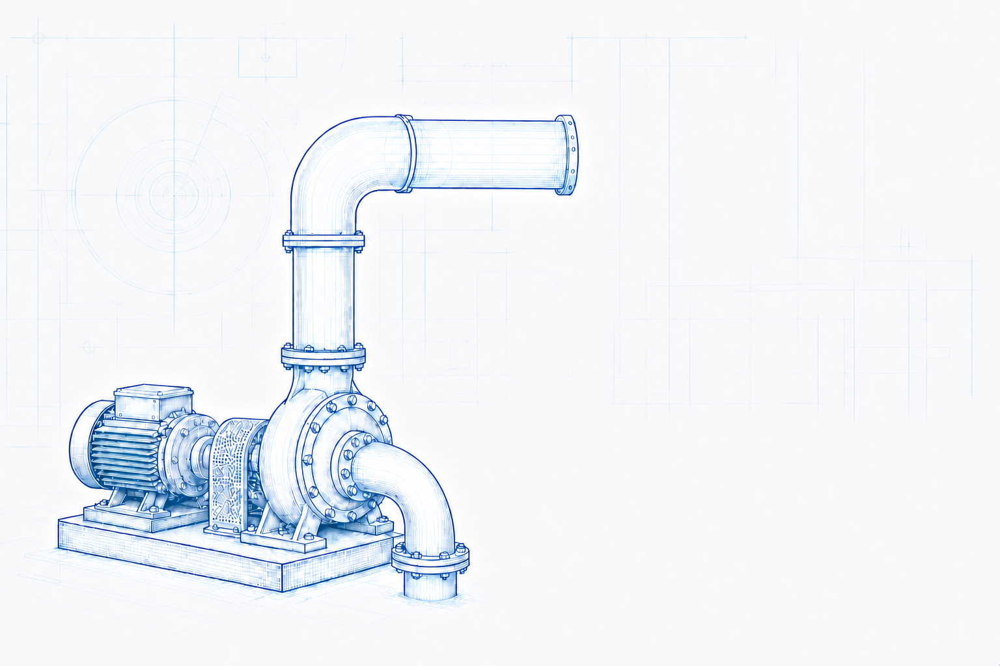

Engineering topic
Density and Specific Gravity
Use the fundamental relationships between mass, volume, density, specific gravity and specific weight in engineering calculations.
Engineering principles2 knowledge pagesSI units first

Explore knowledge pages
Density and specific gravity topics
01
Density, Specific Gravity and Specific Weight
Fundamental definitions, formulae, assumptions and industrial applications for liquid and gas systems.
Open knowledge page →02Air Density: Formula, Factors and Industrial Use
Existing engineering knowledge page covering air properties for practical system applications.
Existing knowledge page →